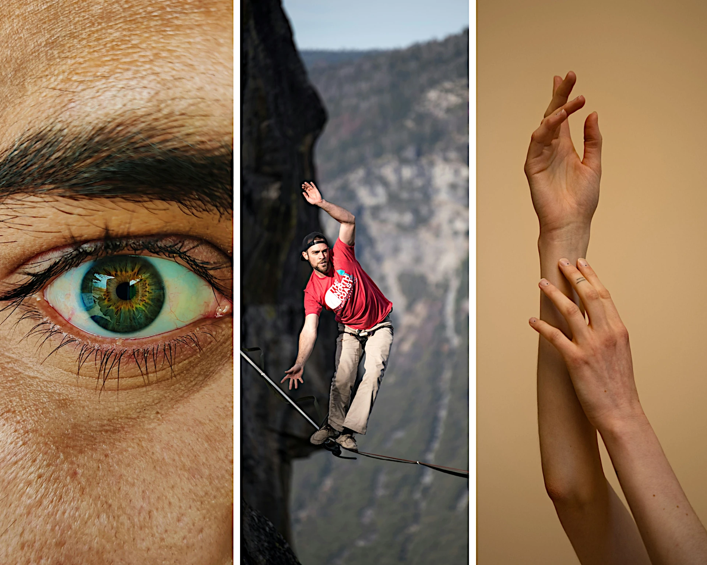

Applied neuroscience in human movement and sport science — where the brain leads, the body follows. Angewandte Neurowissenschaft in Bewegungs- und Sportwissenschaften — wo das Gehirn führt, folgt der Körper.
Applied neuroscience in sports and human movement science also known as Neurotraining (NT) is the practice of using insights from neuroscience to improve real-world outcomes in movement, pain relief, rehabilitation, and performance.
Rather than focusing solely on muscles, joints, or biomechanics, NAT takes a brain-first approach: many physical limitations, chronic pain issues, or performance plateaus are rooted in how the brain interprets and responds to sensory information. Retraining the nervous system creates rapid, measurable changes in movement efficiency, strength, and pain levels.
Angewandte Neurowissenschaften im Sport und in Bewegungswissenschaften — auch bekannt als Neurotraining (NT) — nutzt Erkenntnisse aus der Neurowissenschaft, um Bewegungsabläufe, Schmerzlinderung, Rehabilitation und Leistungsfähigkeit gezielt zu verbessern.
Anstatt sich ausschließlich auf Muskeln, Gelenke oder Biomechanik zu konzentrieren, verfolgt NAT einen „Brain-First"-Ansatz: Viele körperliche Einschränkungen, chronische Schmerzen oder Leistungseinbußen haben ihren Ursprung darin, wie das Gehirn Sinnesinformationen verarbeitet. Durch gezieltes Training des Nervensystems lassen sich schnell spürbare Verbesserungen erzielen.
"If the brain perceives a threat, it may reduce mobility, trigger pain, or restrict strength — not because something is broken, but as a protective response." „Nimmt das Gehirn eine Gefahr wahr, kann es Beweglichkeit einschränken, Schmerzen auslösen oder Kraft reduzieren — nicht weil etwas kaputt ist, sondern als Schutzreaktion."
This method is based on the idea that the brain constantly processes sensory data — vision, balance, proprioception, touch — to determine whether a movement or an environment is safe or threatening.
NAT coaches work directly with the nervous system using targeted sensory drills, nerve mobilisation, visual retraining, and motor control exercises — each customised to the individual. The goal: recalibrate the brain's threat perception and restore optimal movement patterns, often within a single session.
This stands in contrast to purely structural approaches that treat the body as a machine to be repaired. In NAT, the nervous system is both the diagnosis and the treatment.
Diese Methode beruht auf der Erkenntnis, dass das Gehirn ständig Sinnesreize verarbeitet — Sehen, Gleichgewicht, Propriozeption, Tastsinn — um zu beurteilen, ob eine Bewegung oder die Umgebung sicher oder bedrohlich ist.
NAT-Coaches arbeiten direkt mit dem Nervensystem: durch Sinnesübungen, Nervenmobilisation, visuelles Training und Koordinationsübungen — individuell abgestimmt. Das Ziel: die Bedrohungswahrnehmung neu kalibrieren und optimale Bewegungsmuster wiederherstellen, oft bereits in einer einzigen Session.
Dies steht im Gegensatz zu rein strukturellen Ansätzen. In NAT ist das Nervensystem sowohl Diagnose als auch Behandlung.

One of the key strengths of NAT is its ability to provide immediate, measurable feedback. Movement, vision, and sensory assessments can swiftly determine the type of input to which the nervous system responds best — enabling highly personalised and adaptive training from the very first session.
Applied neuroscience means training the brain to alter outcomes — physical and mental. By shifting focus from biomechanics to the nervous system, practitioners achieve precise improvements in performance, pain relief, and rehabilitation — using the brain's own adaptability as the most powerful tool in human health and movement.
Eine der Hauptstärken von NAT ist die Fähigkeit, sofortiges, messbares Feedback zu liefern. Range of Motion-, visuelle und sensorische Assessments bestimmen schnell, auf welchen Input das Nervensystem am besten reagiert — was hochpersonalisiertes Training bereits ab der ersten Session ermöglicht.
Angewandte Neurowissenschaft bedeutet, das Gehirn zu trainieren, um Ergebnisse zu verändern — körperlich und mental. Statt Biomechanik rückt das Nervensystem in den Fokus. Die Anpassungsfähigkeit des Gehirns ist das mächtigste Werkzeug in Gesundheit und Bewegung.
NAT is not reserved for elite athletes. The nervous system governs all human movement — which means everyone stands to benefit. NAT ist nicht nur für Spitzensportler. Das Nervensystem steuert jede menschliche Bewegung — was bedeutet, dass alle davon profitieren können.
Stamatios Papavasiliou · Synapse²Move Munich
Book Free Call → Gespräch buchen →Ready to start?Bereit anzufangen?
Munich · In Person + Online München · Persönlich + Online